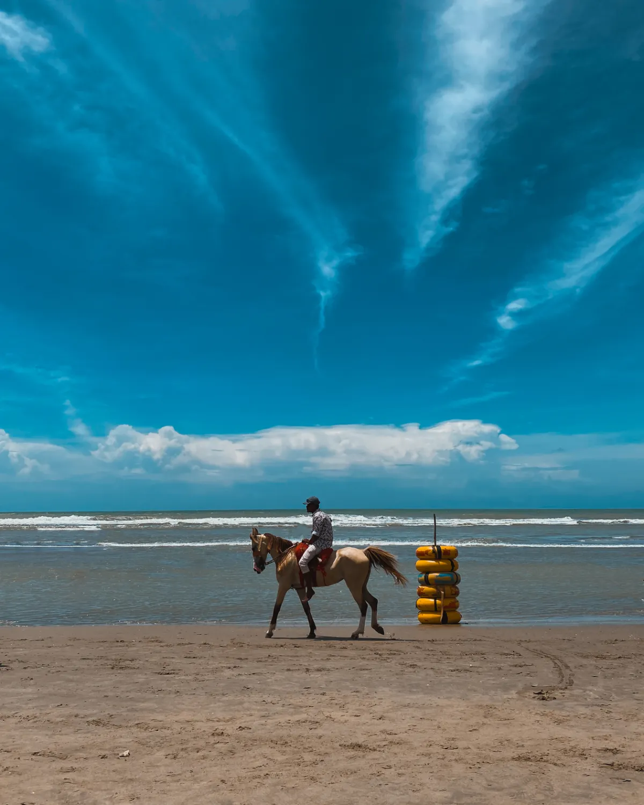

Region · Coast & island
Cox's Bazar & Saint Martin
A very long beach, and the country's only coral island. This is where Bangladesh comes to the sea — sometimes crowded, often beautiful, and easy to reach.

Cox's Bazar has its own airport, so a beach leg is genuinely quick to bolt on — a roughly one-hour flight from Dhaka, or a long overnight bus. The town beach is busy; the reward is heading south along the coast road, and out to the quiet coral island of Saint Martin's.
What to do
- The southern coast road. Himchari's waterfalls and viewpoints, then Inani's rockier, calmer beaches — the part of the coast where you'll actually want to swim.
- Saint Martin's Island. A boat from Teknaf to the country's only coral island: snorkelling in the shallows and genuinely dark night skies. Day trip or overnight.
- The fishing harbour at dawn. The catch coming in at Cox's Bazar's working harbour — early, raw and free.
Check Saint Martin's access before you plan around it. Boat services and visitor access to the island are seasonal and have at times been restricted for environmental reasons. Confirm the current rules before committing to an island night.
How long to plan
Three days lets you see the coast and get to the island without rushing; add a night on Saint Martin's if it's open and you want the stars.
Getting there
Fly or bus from Dhaka. It also pairs naturally with the Hill Tracts via Chittagong if you want mountains and sea in one loop.
Fixed price, meet you at arrivals

Price a beach leg
Opens the planner with Dhaka + the coast.